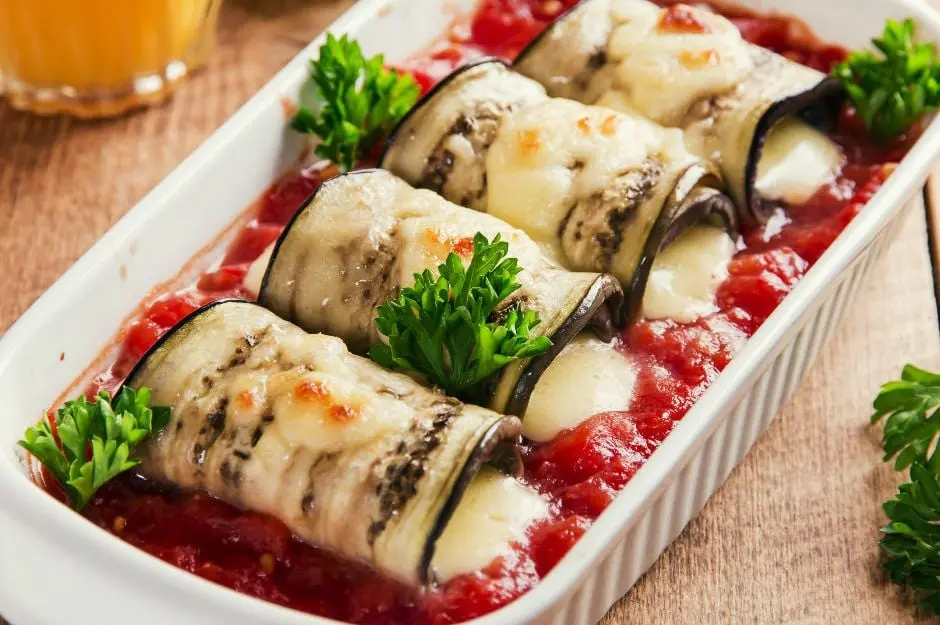

Domates Soslu Izgara Patlıcan Tarifi

Domates Soslu Izgara Patlıcan Tarifi İçin Malzemeler
- 1 adet büyük boy patlıcan
- 2 yemek kaşığı zentinyağı
İçi için:
- 75 gram kaşar peyniri
Domates Sosu için:
- 1 kase domates püresi
- 1 diş sarımsak
- 2 yemek kaşığı zeytinyağı
- 1 çay kaşığı tuz
Nasıl Yapılır?
- Patlıcanları bir soyacak yardımıyla ya da bıçakla uzunlamasına orta kalınlıkta dilimleyin.
- Tuzlu suyun içine aktarıp acısını alın.
- İzli bir ızgara tavasını zeytinyağlı ile yağlayın.
- Patlıcan dilimlerini arkalı önlü yumuşayana kadar pişirin.
- O sırada sarımsağı ezin. Zeytinyağı ile hafifçe kavurun.
- Domates püresini, tuz ve karabiberi üzerine ilave ederek kıvam alana kadar pişirin. Kıvamı koyulaştığında ocaktan alın.
- Pişen patlıcanların içlerine rendelenmiş kaşar peyniri koyup rulo biçimde sarın.
- Hazırladığınız domates sosu bir fırın kabına aktarın. Patlıcanları ortasına oturttun.
- 180 derece peynirler eriyene kadar 8-10 dakika kadar pişirin. Çıkarıp afiyetle tüketin.
Afiyet Olsun...